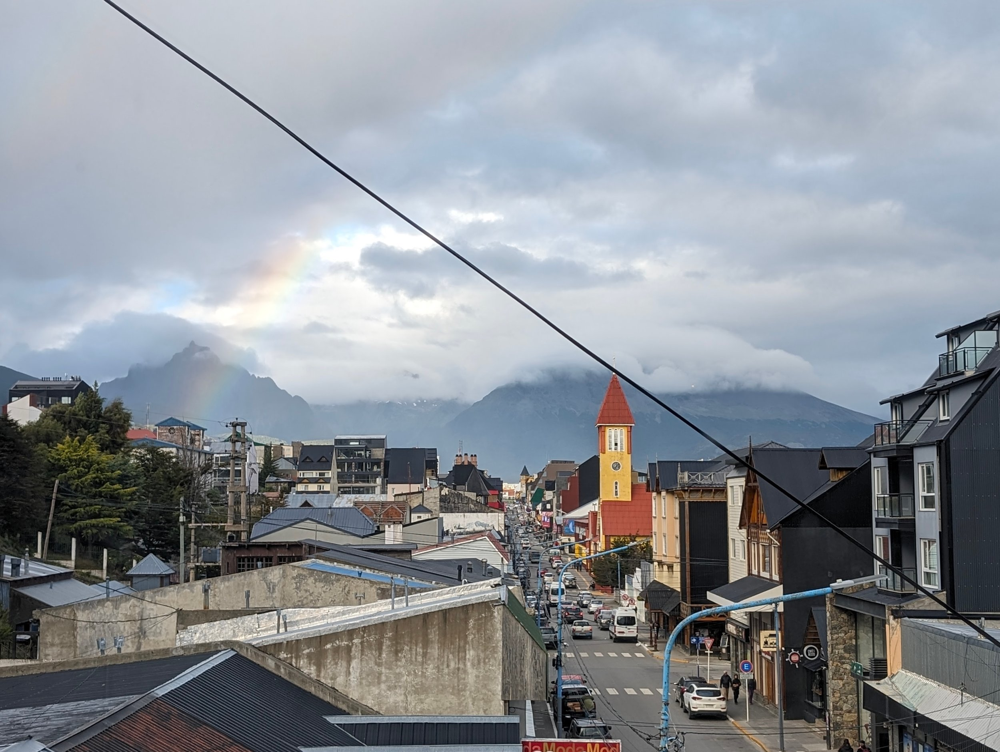
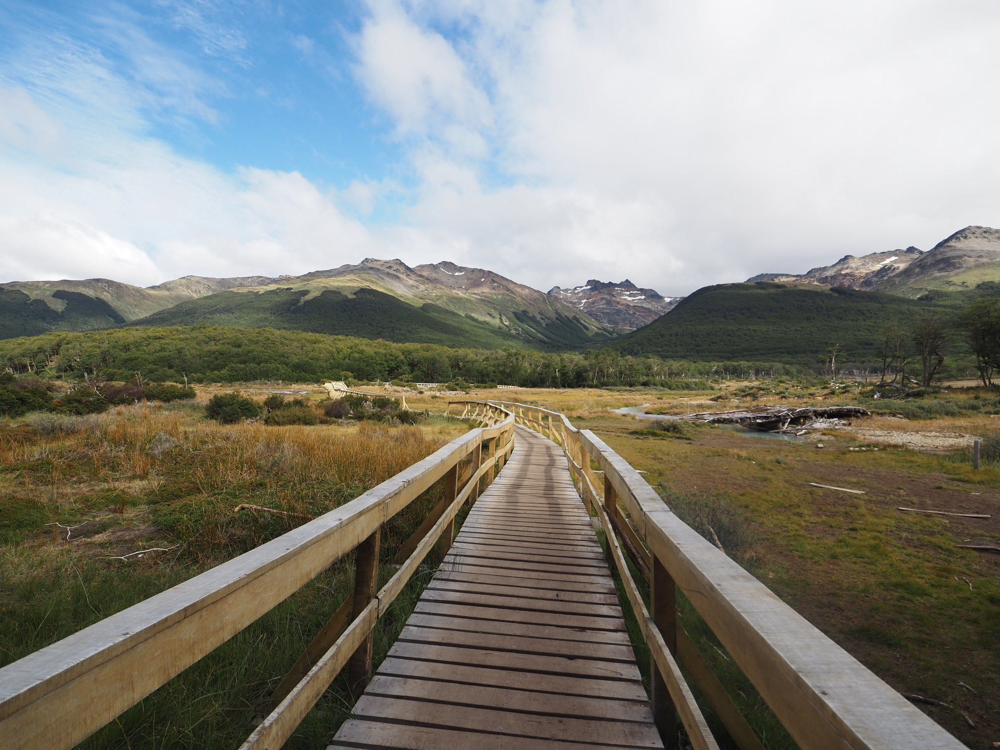
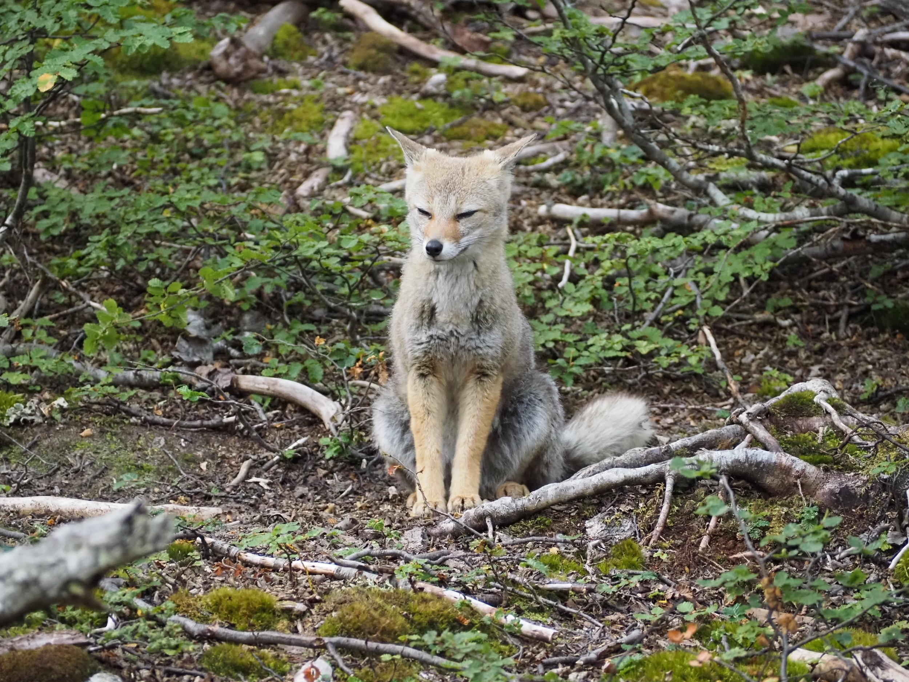
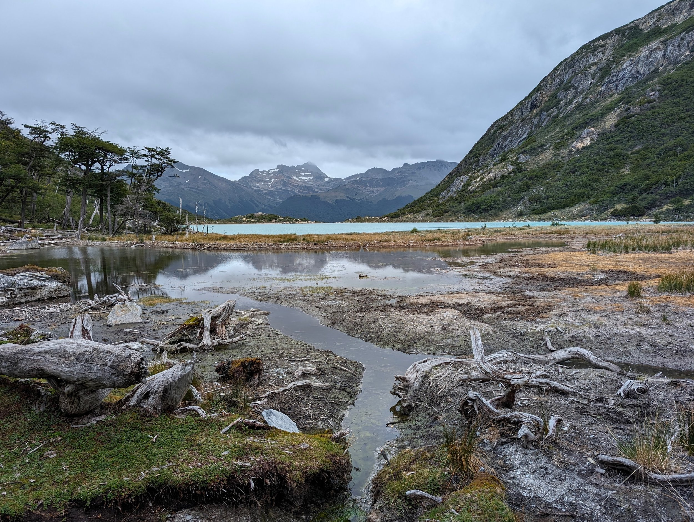
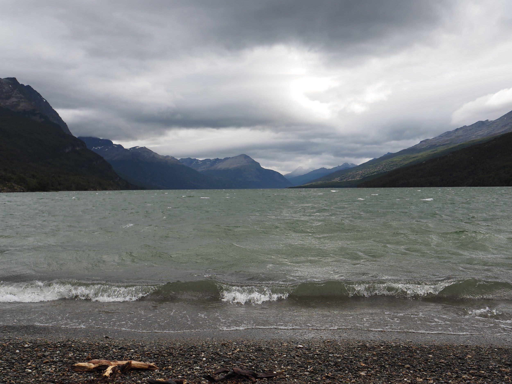
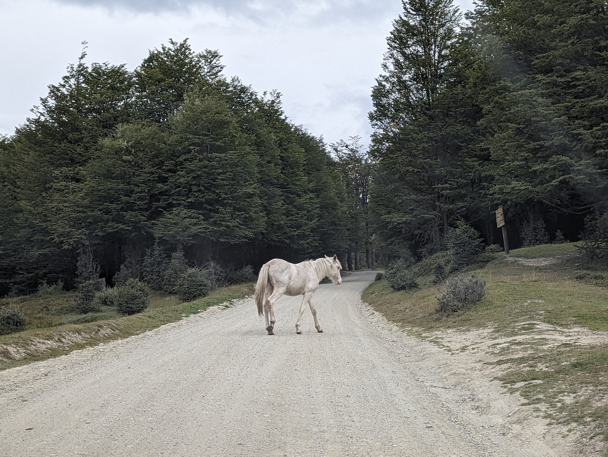
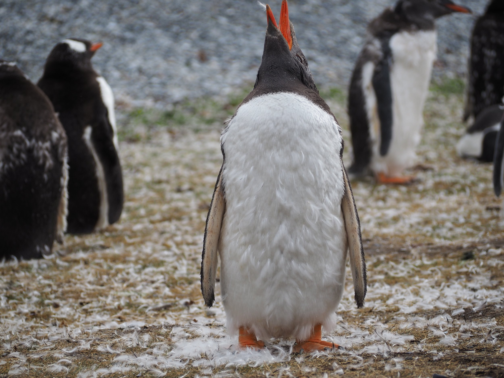
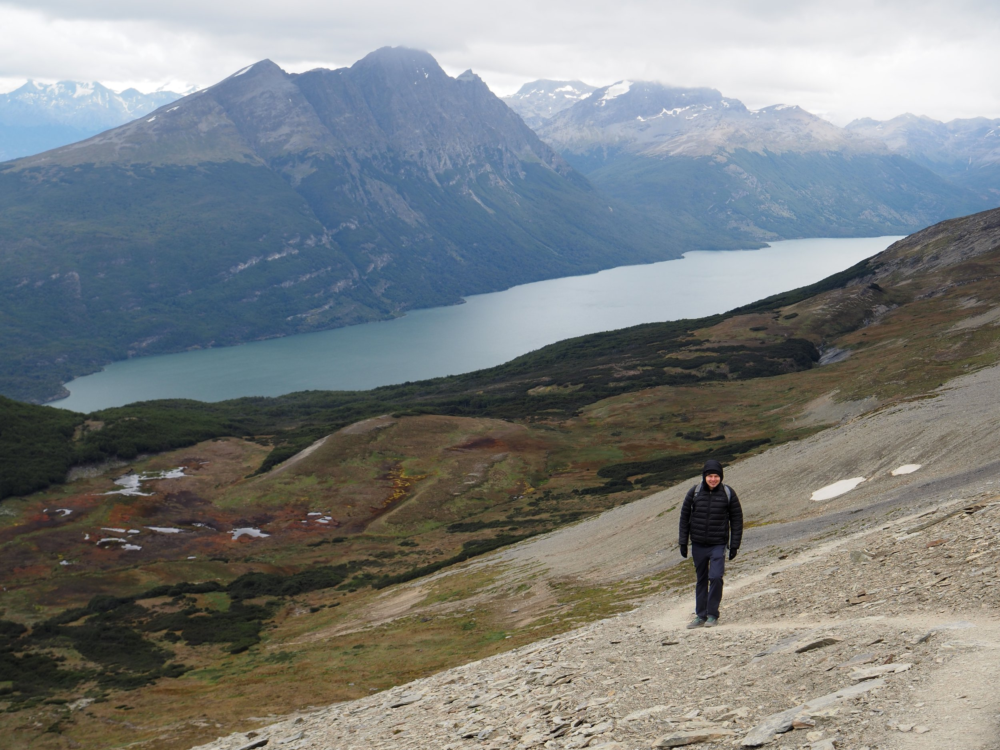

We’re now on our way to El Calafate from Ushuaia. Ushuaia was such an incredible place to visit; we departed from Buenos Aires to the southernmost city in the world — a distinction that is hotly contested by Puerto Williams in Chile who also claim to be the southernmost city in the world. Apparently it all boils down to how many residents are required for a “city” to be called a “city.” Most folks who stop by Ushuaia come here as the starting or ending location for many Antarctica cruises — apparently 90% of cruises either start or stop here! We enjoyed watching the large cruise ships constantly coming into and out of the main port.
>

Ushuaia is filled with magnificent landscapes and amazing wildlife. We mostly spent our days in Ushuaia hiking with a couple of boating excursions to a penguin colony and some wildlife spotting while cruising down the Beagle Channel. We got lucky with the weather; it was very much “Patagonia weather” in that within a day/few hours, the weather can change pretty dramatically.
>

Our first full day in Ushuaia, we hiked to Laguna Esmeralda. The water flows down from a glacier leading to the creation of a “laguna” with milky turquoise water. We learned that the milkiness of the water comes from the mineral deposits (“glacial flour”) that the water accumulates from flowing down the rocks of the glacier. The water tasted so fresh! The hike itself was phenomenal with stunning views along the way and for a good length of the hike, we got to walk next to a gurgling flow of water from the laguna. We saw our first Patagonian fox (which patiently waited while I hastily swapped out my wide angle lens for my zoom lens for a picture before trotting off).
>

One interesting story about hiking at Laguna Esmeralda: at the trailhead, we met a few folks riding motorcycles who needed some help finding a “moto cafe” — we helped them out since we had a weak signal on our phone. As we were departing, they told us to use a different entrance to the hike than the one closest to the parking area where we had parked. I think they told us that because the entrance that they were pointing us towards was less confusing to navigate (there were a few forks along the trail). In any case, on the way back, we decided to try to use an alternate fork that would lead back to the trailhead, directly to the parking lot. On this path, we ran into a big compound of what we thought were wolves that were caged and chained up. This was so sad to see and as a few were growling and straining at their chains, we decided to backtrack and take our original path back. We later looked up the area and found out that the dogs were actually huskies that are used in the wintertime to pull sleds as a tourist attraction. It was really heartbreaking to see them all caged up.
>

Two days were spent exploring the Tierra del Fuego national park. There’s a post office at the “Fin del Mundo” where you can get your passport stamped (which we did) and many fantastic hikes. Our favorites were the Hito XXIV hike (named for the 24th geodesic point that establishes the border between Chile and Argentina) which literally ends at Chile and the Cerro Guanaco hike which ends at a stunning viewpoint of the surrounding mountains, the Beagle Channel, Lago Acigami, and Ushuaia. Word of advice — use AllTrails to get a more complete picture of hiking trails. There weren’t any paper maps available at the park and maps that were available (either the one paper copy that was taped onto a desk at the unstaffed visitor center or the map boards at each of the trailheads) were incomplete. AllTrails definitely had the most accurate maps; I would download trails at our Airbnb since there isn’t service in the park.
>

We also saw wild horses! They were so beautiful and we wondered if they were truly wild or not but seeing them strolling around shoe-less (and some online research afterwards) convinced us. Speaking of online research, we have a system now of taking pictures of animals or things that we don’t know anything about, coming back to our accommodations and using Google reverse image search to learn more about them. Very effective!
>

It’s hard to pick a single highlight from Ushuaia, but certainly our visit to a penguin island is up there. Penguins are too cute!! We saw two different types of penguins on this excursion and saw a sea lion lurking around the shore that had them scattering about. That evening, we went on a cruise in the Beagle Channel and saw sea lions (that truly look like a pile of russet potatoes) and many bird varieties. We also boated past a cool lighthouse and had some entertainment as a kid lost their shoe in the Beagle Channel and a couple guys attempted to fetch the floating, fickle shoe using a long pole and a bucket. Alas, a toddler-sized shoe doesn’t have the easiest foot hole to loop into (threading the needle, if you will, in semi-choppy waters) so it was lost to sea.
>

Most of our dinners we cooked at our yet another stunning Airbnb (made some Asian-ish food of which we have had very little so far when dining out in Argentina), but on our last night, we went out to dinner. Who knew you had to make reservations in Ushuaia?! After striking out twice, we found an amazing cafe that also did dinner and I might have had some of the best risotto ever: carrot and Brie cheese with ash oil. That, a glass of delicious Malbec, and watching some ships depart into the night, was such a lovely way to end our Ushuaia visit. Next stop: El Calafate!
>

Favorites:
-
Dody Churros: we ate churros 4 out of the 6 days we were in Ushuaia. They were always fresh, crispy on the outside, soft on the inside, and not too sweet with just a light dusting of crunchy sugar. Once, we got them hot (must have been a just-made batch?) which was extra perfect.
-
Cerro Guanaco: this is a strenuous 12 kilometer hike (6km in each direction) with 3200 feet elevation gain. The last 2 kilometers were especially hard and windy as the area is quite exposed. The views are absolutely worth it.
-
Piratour Penguin Excursion: There’s only one company that actually lets you walk on the island with the penguins and it’s this one and it’s worth every penny.
-
Augusto: an unassuming eatery that didn’t need reservations and made the most amazing carrot, brie cheese, and ash oil risotto. Kevin also had a bomb sweet potato with blue cheese, honey, mustard, and wasabi.